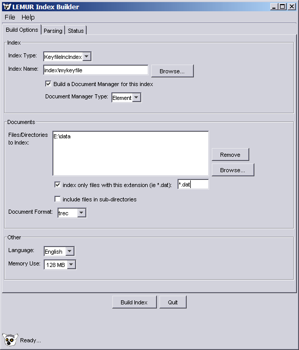
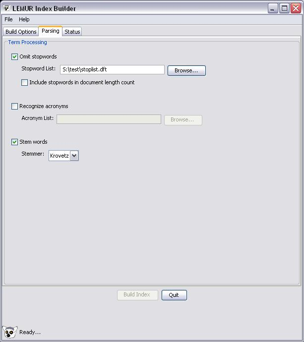
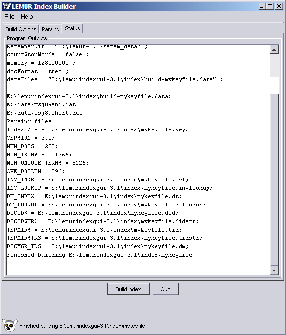

Lemur Index GUI Help
Getting Started
The Lemur IndexUI is an application intended to simplify the process
of indexing a collection of data files for use by a retrieval or other
Lemur application. You
specify an index
name and at least one data file to
index in the appropriate fields of the Index GUI's main panel. For all
other parameters, the defaults supplied here should be appropriate for
most applications. Review these settings (described below) and click the
Build Index button to build your index.
All the Options
Menus
The Lemur IndexUI has two menus, described below.
File Menu
- Save
- Enabled when an index
name and at least one data file have been
entered. Saves two files, build-<indexname>.param and
build-<indexname>.data, each in the selected directory
for the index. The former contains the parameters for the lemur indexing
application appropriate to the selected index type. The latter contains
the list of data files to add to the index.
- Quit
- Exits the Lemur Index GUI. This item is disabled
when an index is being built. It is still possible to close the window
with the title bar control. If you do close the window while an index is
being built, the build will fail and you will have to manually remove
the partially built index files.
Help Menu
- Help
- Opens a window to view this help file. Any
hyperlinks in this file will be opened in a separate window within a
second window.
- About
- Displays the About Dialog.
Indexing Tab

On this tab you select the values necessary to construct your
index. You are required to select a name for you index, and at least one
input data file or directory. All other parameters have default
values. Each is described below.
Index
- Index Name: base name for the
index without the extension. This can be typed in directly (as an
absolute or relative pathname), or you can use the Browse button to
navigate to the directory where you want your index, and type the
basename into the file chooser dialog.
- Index Type:
- KeyfileIncIndex
- B-tree based data files. Provides instant on
access to the index with bounded memory usage with a small penalty in
run time performance for smaller indexes. Stores position information
for each term. Suitable for use with all retrieval methods. The default
index type.
- IndriIndex
- B-tree based data files. Designed for very
large collections. This GUI uses Lemur parsing (instead of Indri's own custom parsing)
to build the collection. An Indri document manager is automatically created for every
IndriIndex.
- Build Document Manager. Select his check box to build a
document manager for this index. Recommended if you want to be able to
retrieve the actual document text (default on).
- Document Manager Type:
- Keyfile
- B-tree based data files. Provides instant on
access to the document manager with bounded memory usage with a small
penalty in run time performance for smaller indexes. This is the default
document manager type.
- Element
- Keyfile document manager that additionally
stores element information, such as title. Elements can handle nested
tags, but can have only one of each type of element for each
document. If more than one of the same type of element, the last one is
the one actually saved. If more than one of the same type element tags
are nested, the inner tags are ignored.
Documents
- Document Format:
- web
- for web formatted documents with <DOC> and
<DOCNO> tags. This is the default document format.
- trec
- for standard TREC formatted documents
- arabic
- for Arabic text (TREC format, Windows CP1256
encoding)
- chinese
-
- for segmented Chinese text (TREC format, GB
encoding). Indexes each white space delimited token separately. Input
files must be segmented with some external program.
- chinese char
- for unsegmented Chinese text (TREC
format, GB encoding). Indexes each individual character separately.
- Data File(s): Use the Browse button
to navigate to a directory and select files or directories. To remove
unwanted items from the list, highlight the item (right click with the
mouse) and use the Remove button to remove the entry. Multiple entries
can be selected by using either the Shift key (to select a contiguous
range) or the Control key (to select discontiguous elements) while right
clicking with the mouse.
- Filename filter: If a filter is supplied, it is used for
the file selection dialog box. Additionally, if the filter is supplied
and an entry is a directory, all files in that directory that match the
filter are added to the list of datafiles. The filter should be a
command line filename regular expression, eg *.sgml or data?.txt. In the
pattern, '*' expands into 0 or more characters (including .) and '?'
expands into 0 or 1 character (including .).
- Recurse into subdirectories: if selected and an entry in
the data files list is a directory, we recurse into each subdirectory,
again applying any supplied filename filter. If the filter is empty, all
files in a directory are added to the list of data files for indexing.
Other
- Memory Limit: Select How much memory to use while
indexing. A rule of thumb is no more than 3/4 of your physical memory
(default 128MB).
- Build Index: Enabled when an index
name and at least one data file have been
entered. Saves two files, build-<indexname>.param and
build-<indexname>.data, each in the selected directory
for the index. The former contains the parameters for the lemur indexing
application appropriate to the selected index type. The latter contains
the list of data files to add to the index. It then invokes the indexing
application, building the index. Status messages are displayed in the Status Messages tab, which is brought to the front
when indexing is started. You should not close the application while an
index is being built. If you do, partially built index files will be
left behind.
- Quit: Exits the Lemur Index GUI. This item is disabled
when an index is being built. It is still possible to close the window
with the title bar control. If you do close the window while an index is
being built, the build will fail and you will have to manually remove
the partially built index files.
Parsing Options Tab

This tab provides advanced options for creating the index. For most
uses, the defaults provided here will be the right choice. Each is
described below.
- Omit stopwords: select this check box to not index stopwords. Stopwords are
words included in the Stopword List.
- Stopword list: Enter the name of file containing the
stopword list you wish to use or use the Browse button to navigate to
the file.
- countStopWords: Select this check box to count stopwords in
document length (default off).
- Recognize acronyms: select this check box to recognize acronyms as special terms in the index.
Acronyms are words included in the Acronym List.
- Acronym list Enter the name of file containing the acronym
list you wish to use or use the Browse button to navigate to
the file.
- Stem words: Select this check box to enable stemming
(conflation of morphological variants) for the index (default on).
- Stemmer:
- krovetz
- Krovetz stemmer (default).
- porter
- Porter stemmer.
- arabic
- Larkey arabic stemmer.
- arabicStemFunc: Which arabic stemming algorithm to apply, one of:
- arabic_light10_stop
- light10 with stopping
(default)
- arabic_light10
- light9 plus ll prefix
- arabic_stop
- stopping only
- arabic_norm2
- table normalization
- arabic_norm2_stop
- table normalization with stopping

This tab provides status messages from the indexing process. It is
updated as the process runs and should scroll down as messages are added.